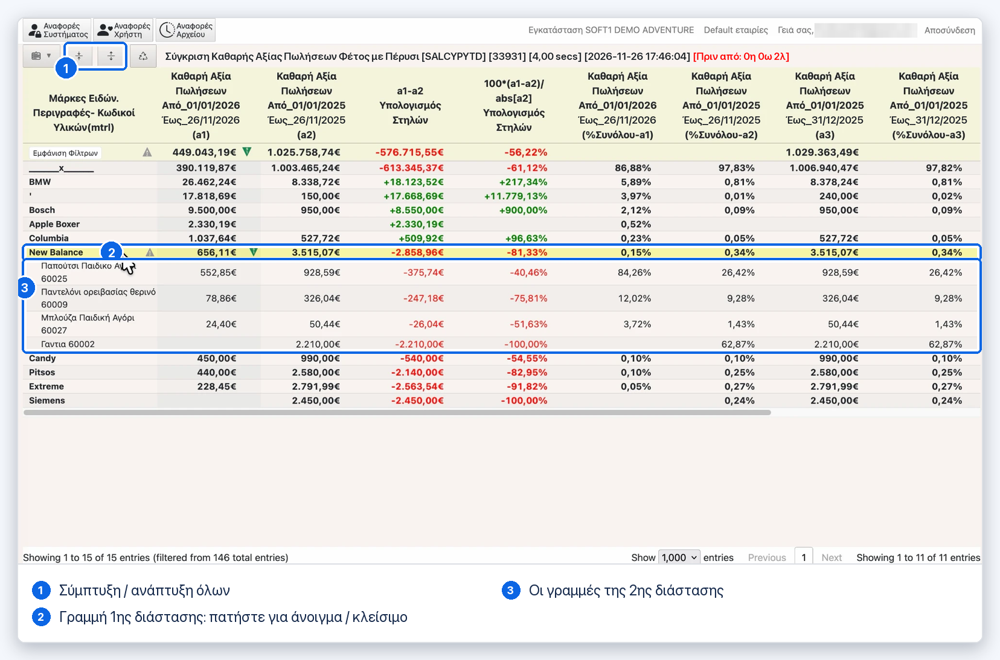

Drill-down: από τη σύνοψη στη λεπτομέρεια
Σε αναφορά με δύο διαστάσεις, πατάτε μια γραμμή της 1ης διάστασης και βλέπετε από τι αποτελείται στη 2η.
Τι κάνει#
Όταν η αναφορά έχει Διάσταση 1 και Διάσταση 2, τα αποτελέσματα ανοίγουν συνοπτικά: μία γραμμή για κάθε τιμή της 1ης διάστασης. Πατάτε σε μια γραμμή και εμφανίζονται από κάτω οι γραμμές της 2ης διάστασης που την αποτελούν.
Πότε το χρησιμοποιώ#
Βλέπετε ότι ένας πωλητής έπεσε 15% σε σχέση με πέρυσι. Πατάτε πάνω του και βλέπετε ποιοι πελάτες του (2η διάσταση) έφεραν την πτώση.
Βήματα#
- Ορίστε στις ρυθμίσεις Διάσταση 1 (π.χ. πωλητής) και Διάσταση 2 (π.χ. πελάτες). Μπορείτε να το κάνετε και από τις Γρήγορες επιλογές (1η ΔΙΑΣΤΑΣΗ: και 2η ΔΙΑΣΤΑΣΗ:).
- Πατήστε Εμφάνιση Αναφοράς.
- Στα αποτελέσματα, πατήστε πάνω σε μια γραμμή. Ανοίγουν οι γραμμές της 2ης διάστασης.
- Πατήστε ξανά την ίδια γραμμή για να κλείσουν.
- Με τα εικονίδια σύμπτυξης και ανάπτυξης (βελάκια), πάνω αριστερά, κλείνετε ή ανοίγετε όλες τις γραμμές μαζί.

Συμβουλές και συχνά λάθη#
- Δεν ανοίγει τίποτα όταν πατάω; Η αναφορά δεν έχει 2η διάσταση.
- Το drill-down φτάνει ως τη 2η διάσταση. Δεν ανοίγει παραστατικά. Για πιο βαθιά ανάλυση, τρέξτε άλλη αναφορά με φίλτρο την τιμή που σας ενδιαφέρει (π.χ. από τις Γρήγορες επιλογές, ΦΙΛΤΡΟ:).
- Θέση και ποσοστά της 2ης διάστασης υπολογίζονται μέσα σε κάθε ομάδα. Π.χ. «1ος πελάτης του πωλητή Χ», όχι «1ος πελάτης της εταιρείας».
- Για να φιλτράρετε τις γραμμές της 2ης διάστασης, χρησιμοποιήστε τη σειρά Φίλτρο Διάστασης 2 και τα δικά της πεδία από / έως (κουμπί Εμφάνιση Φίλτρων).
Σας βοήθησε αυτό το άρθρο;